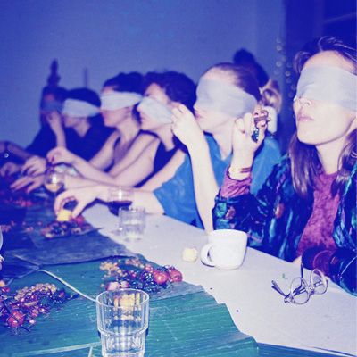

GUSTATORY SOUND
by Aslı Hatipoğlu & Ari-Pekka Leinonen
Gustatory sound is an experimental acousmatic dinner experience by artists Asli Hatipoglu and Ari-Pekka Leinonen. The 3 course culinary journey is an experimental collaboration of the two artists, developed on the concept of bringing sound experiments to the audience in an unconventional way.
-
Friday, 26th of January, 2024
from 19:30h to 21:30h
@ Rue de l'Hectolitre 3, 3rd floor
-
Dinner price: 20 euros.
(Please bring cash)
Max guests: 15 persons
We will have several drinks for sale during the event.
Please RSVP until Wednesday 24th of January midnight!!!
You can write us an email:l.hectolitre@gmail.com, or send a message to +32487997212
Please let us know if you have any alergies, meals will be vegan
limited space for 15 people <3<3<3
Guests are invited to give in as well as creating the experience of this composition with special and seasonal produce cooked by culinary chef Asli Hatipoglu. She plays with textures and sounds, along with her months-long ferments, while Ari-Pekka delivers live improvised music throught ele-gi-eli sound system. The two invite the audience to merge into the experience of acousmatic food. There will be sculptural works by Barbara Prada to interact with, as well as spicy drinks.
-
PROGRAM
19:00 > door opens
19:30 > performance starts ( duration: 40 min)
21:30 > door closes
-
Aslı Hatipoğlu (TR/TH, 1990) is a textile culinary artist based in Brussels and Amsterdam. Her work often relates to topics such as ecology and sustainability and the challenges it imposes on our daily lives in complex systems of consumption. She is interested in science and what it can offer as well as the dangers it imposes (such as domination over nature and genetic modifications) that bring ethical questions towards our future as species. Through investigating ancestral knowledge with a community building approach, Asli is also interested in fusing diversity of her knowledge among her experiments in different environments. She often creates interactive installations, video work or uses performative storytelling through conceptual dinners as a way to bring topics of her interest forward. She currently collaborates with artists from various fields on different topics that conceptualises on dinner table.
After working several years as a self-taught chef, Asli deepened her knowledge with fermentation during her residency at the Food Lab Jan van Eyck Academie 2020-2021, along participating in several festivals such as Food Art Film Festival JVE (NL), Foodculture Days Vevey (CH), Oerol Terschelling (NL), Japanese Knotweed Festival at Mediamatic (NL) and Zamus Theaterhaus Cologne (DE) . Her works were exhibited in places such as Zuiderzee Museum in Enkhuizen, Framer Framed in Amsterdam, Fanfare Amsterdam, Perdu Amsterdam, Het Nieuwe Instituut Rotterdam, Jan Van Eyck Academie Maastricht. She has hosted many dinners since 2015, among the project called Fantasies, a blind-fold culinary journey with musician Roy Amotz across Europe.
-
https://www.instagram.com/_aslihatipoglu/
-
Ari-Pekka Leinonen actively works with performatic sound art installations that utilise sound projection with multiple loudspeakers. Other than that he is interested in carpenting, possibilities of loudspeakers as wooden sculptures and how the sound systems create platforms for moving bodies and sonic story-telling. Recently he has been exploring the skyline of Brussels and minor details of the city facade in order to combine the visual explorations and aural discoveries into a conclusive soundpiece ele-gi-eli for his sound triptych consisting of two earlier works L=10 and ||: o / dear<3 :||
-
https://ari-pekkaleinonen.com/index.html
-
SEE YOU SOON!!